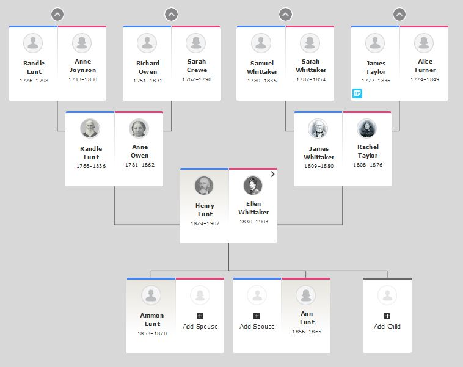

Henry Lunt and Ellen Whittaker Family Tree

Click on an Individual in the Tree to go to the FamilySearch public page for that individual.
Note: Henry and Ellen adopted two Native American children. Neither survived to adulthood.